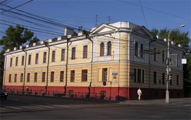
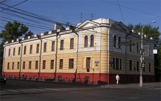

О нашей клинике
Наша поликлиника является крупным многопрофильным лечебно-профилактическим учреждением системы Кремлевской медицины, оснащенным новейшим лечебно-диагностическим оборудованием.
Штат сотрудников состоит из высококвалифицированного медицинского персонала. Прием и лечение пациентов осуществляется врачами более чем 35 специальностей ежедневно с 8:00 до 20:00, в субботние дни - с 8:00 до 14:00, обслуживание на дому - с 9:00 до 17:00. Скорая медицинская помощь с бригадой реанимации работает круглосуточно.
Главными задачами учреждения являются сохранение высокого уровня оказания медицинской помощи, совершенствование методов организации работы, приобретение новейшей аппаратуры, внедрение инновационных методов диагностики и лечения, развитие материально-технической базы, создание условий для комфорта и удобства при посещении поликлиники.
Виды медицинского обслуживания:
 Наша поликлиника является крупным многопрофильным лечебно-профилактическим учреждением системы Кремлевской медицины, оснащенным новейшим лечебно-диагностическим оборудованием.
Штат сотрудников состоит из высококвалифицированного медицинского персонала. Прием и лечение пациентов осуществляется врачами более чем 35 специальностей ежедневно с 8:00 до 20:00, в субботние дни - с 8:00 до 14:00, обслуживание на дому - с 9:00 до 17:00. Скорая медицинская помощь с бригадой реанимации работает
Штат сотрудников состоит из высококвалифицированного медицинского персонала. Прием и лечение пациентов осуществляется врачами более чем 35 специальностей ежедневно с 8:00 до 20:00, в субботние дни - с 8:00 до 14:00, обслуживание на дому - с 9:00 до 17:00. Скорая медицинская помощь с бригадой реанимации работает круглосуточно.
Главными задачами учреждения являются сохранение высокого уровня оказания медицинской помощи, совершенствование методов организации работы, приобретение новейшей аппаратуры, внедрение инновационных методов диагностики и лечения, развитие материально-технической базы, создание условий для комфорта и удобства при посещении поликлиники.
Виды медицинского обслуживания:
- Добровольное медицинское страхование через ведущие страховые компании.
- Обслуживание за наличный расчет и по кредитным картам через кабинет платных медицинских услуг.
- Обслуживание в соответствии с программами по лечению конкретных заболеваний.
- История поликлиники начинается с 1981 года, когда в новом здании на Грохольском переулке
 Наша поликлиника является крупным многопрофильным лечебно-профилактическим учреждением системы Кремлевской медицины, оснащенным новейшим лечебно-диагностическим оборудованием.
Штат сотрудников состоит из высококвалифицированного медицинского персонала. Прием и лечение пациентов осуществляется врачами более чем 35 специальностей ежедневно с 8:00 до 20:00, в субботние дни - с 8:00 до 14:00, обслуживание на дому - с 9:00 до 17:00. Скорая медицинская помощь с бригадой реанимации работает
Что бы посмотреть таблицу прокрутите вправо